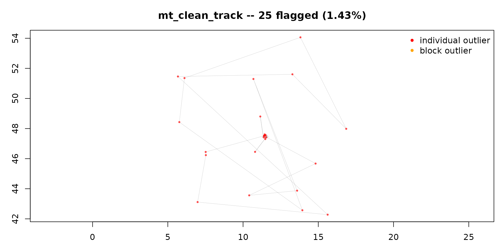

Getting started: cleaning a track with move2utils
Source:vignettes/OUTLIER_1_getting_started.Rmd
OUTLIER_1_getting_started.RmdWhy clean a track?
Almost every GPS or satellite track contains a few bad locations: a fix from the wrong place, a brief satellite-geometry error, a tag switched on before it was fitted. They are usually a tiny fraction of the data, but they do real damage — one location far out of place inflates every speed you compute and distorts home ranges. Cleaning is the first step of most movement analyses.
There is no definitive list of correct outliers. An outlier is a
judgement that a location is too implausible to keep; some are obvious,
others borderline. So move2utils does not try to find a
perfect set. It flags the conspicuous errors reliably, leaves
believable data alone, and shows you what it did so the judgement stays
yours.
Always plot the result and check it. No automatic cleaner should be trusted blind.
mt_clean_track() does the cleaning by combining four
independent checks (path position, there-and-back spikes, unusual
movement, and speed) into a single decision. This vignette covers the
one-call workflow, then each check on its own for finer control.
Load data
We use the CPF_A track from the package’s bundled
synthetic data — a 1748-fix central-place-forager simulation with bad
locations injected at known positions, so we can see what “clean” should
look like. The same track is the demonstration fixture in vignettes 3, 4
and 5. For narrated cleaning of real GPS tracks, see the
OUTLIER_example_* vignettes under “Where to go next”.
library(move2)
library(sf)
library(move2utils)
path <- system.file("extdata/synthetic_tracks.csv.gz", package = "move2utils")
tracks <- mt_read(path)
cpf_a <- filter_track_data(tracks, .track_id = "CPF_A")
cat(nrow(cpf_a), "locations\n")
#> 1748 locationsIf you pull your data from Movebank, see the appendix for the recommended download pattern — it matters which attribute columns you ask for, because the cleaning can use Movebank’s per-fix quality information to sharpen its decisions.
The one-call workflow
mt_clean_track() runs the four checks in turn, decides
which locations to flag, removes groups of bad locations that form
isolated blocks, and iterates until nothing new is flagged. By default
it returns the cleaned track.
clean <- mt_clean_track(cpf_a)
#> No physiological speed cap supplied -- running with a data-driven cap chosen from your track. This works well for most cases. If your animal has multiple behavioural states (e.g. perched and flying) or you expect sustained-spoof errors, supplying `v_max =` (a published top speed in m/s) or `(mass = ..., mode = ...)` for the allometric estimate gives sharper results. See `?v_phys_estimate` for the allometric helper; `?mt_clean_track` documents the failure modes of the auto-cap in detail.
#> Auto-cap landed at 60.2 m/s -- above the Hirt 2017 95% upper CI of the maximum biological speed (~52.6 m/s). The gap finder is detecting a structural break within the outlier tail. Supply `(mass, mode)` or a hard `v_max` for a principled physiological cap. See `?v_phys_estimate`.
#> Iter 1: bridge=20 prob=5 speed=23 detour=11 (v_max=60.2) | conjunction=22 | new=22 cumulative=22
#> Iter 2: bridge=3 prob=16 speed=4 detour=2 (v_max=20.3) | conjunction=3 | new=3 cumulative=25
#> Iter 3: bridge=0 prob=12 speed=0 detour=2 (v_max=-) | conjunction=0 | new=0 cumulative=25
#> === mt_clean_track: 25 flagged (1.430% of 1748); stopped: no_new_flags ===
#> Returning the cleaned track (1723 rows). To inspect what was flagged, re-run with remove = FALSE.
cat("kept", nrow(clean), "of", nrow(cpf_a),
" (removed", nrow(cpf_a) - nrow(clean), ")\n")
#> kept 1723 of 1748 (removed 25 )The messages are the function narrating its decisions; the figure shows the kept track with the removed locations marked. Check that plot: do the removed points match where you would have pointed?
How the decision is made. Each of the four checks
occasionally fires on good data (a real sharp turn, a genuine fast
burst), so the cleaner does not simply count votes. It weighs how
strongly each check distrusts a location and flags it when the combined
evidence is positive and either two checks agree or one
is overwhelmingly sure. This catches clear errors that a single check
happens to see, without over-cleaning believable data. This rule is the
default (consensus = "evidence_corroborated"); you can
change it via consensus = — the earlier behaviour is
"class_aware", and "strict",
"majority", "speed_trusted",
"weighted_evidence", "any" and
"custom" are also available (see
?mt_flag_consensus).
To see which check caught what, set
remove = FALSE: every location is kept and the ones that
would be removed are labelled.
flagged <- mt_clean_track(cpf_a, remove = FALSE, plot = FALSE)
#> No physiological speed cap supplied -- running with a data-driven cap chosen from your track. This works well for most cases. If your animal has multiple behavioural states (e.g. perched and flying) or you expect sustained-spoof errors, supplying `v_max =` (a published top speed in m/s) or `(mass = ..., mode = ...)` for the allometric estimate gives sharper results. See `?v_phys_estimate` for the allometric helper; `?mt_clean_track` documents the failure modes of the auto-cap in detail.
#> Auto-cap landed at 60.2 m/s -- above the Hirt 2017 95% upper CI of the maximum biological speed (~52.6 m/s). The gap finder is detecting a structural break within the outlier tail. Supply `(mass, mode)` or a hard `v_max` for a principled physiological cap. See `?v_phys_estimate`.
#> Iter 1: bridge=20 prob=5 speed=23 detour=11 (v_max=60.2) | conjunction=22 | new=22 cumulative=22
#> Iter 2: bridge=3 prob=16 speed=4 detour=2 (v_max=20.3) | conjunction=3 | new=3 cumulative=25
#> Iter 3: bridge=0 prob=12 speed=0 detour=2 (v_max=-) | conjunction=0 | new=0 cumulative=25
#> === mt_clean_track: 25 flagged (1.430% of 1748); stopped: no_new_flags ===
#> Returning all rows with flag columns attached. To drop flagged rows, either re-run with remove = TRUE (the default) or subset: x[!x$is_outlier, ].
table(flagged$is_outlier)
#>
#> FALSE TRUE
#> 1723 25
table(path = flagged$flagged_by_bridge,
back = flagged$flagged_by_detour,
unusual = flagged$flagged_by_prob,
fast = flagged$flagged_by_speed)
#> , , unusual = FALSE, fast = FALSE
#>
#> back
#> path FALSE TRUE
#> FALSE 1692 4
#> TRUE 1 4
#>
#> , , unusual = TRUE, fast = FALSE
#>
#> back
#> path FALSE TRUE
#> FALSE 23 0
#> TRUE 0 0
#>
#> , , unusual = FALSE, fast = TRUE
#>
#> back
#> path FALSE TRUE
#> FALSE 7 0
#> TRUE 5 3
#>
#> , , unusual = TRUE, fast = TRUE
#>
#> back
#> path FALSE TRUE
#> FALSE 0 0
#> TRUE 9 0The columns flagged_by_bridge (path position),
flagged_by_detour (there-and-back),
flagged_by_prob (unusual movement), and
flagged_by_speed (speed), together with
flag_iteration and block_id, record the
provenance of each flag. The error_class column names which
rule caused the flag (e.g. a clear there-and-back spike, an impossible
speed, or membership of a removed block) — see
vignette("OUTLIER_2_diagnose_clean_track", package = "move2utils")
for the taxonomy.
Errors also come in groups: a run of fake locations from a spoof, or a cluster stuck at one wrong place. The cleaner detects locations forming a block cut off from the real trajectory and removes the whole block, not just its edges.
When to supply a physiological speed cap
By default v_max = NULL, and the speed check infers a
plausible cap from the track itself. This is safe on most species, but
it has a known limit: long, internally consistent error clusters
(typical of GPS spoofs or multi-hour position jumps) have small internal
step speeds and only stand out at their edges. A single fixed
physiological cap, applied repeatedly until nothing more is removed,
dissolves them cleanly.
The block-detection step also uses v_max to decide which
locations are connected. It only removes a block when the data show the
expected “trajectory plus isolated clusters” shape; if the inferred cap
sits inside the species’ normal speed range, removing blocks would cut
real trajectory, so the step is declined automatically (the decision is
printed in the narration). To enable it on a fast-flying species, give a
physiological cap via v_max = or the
(mass, mode) route below.
## a large eagle sustains roughly 30 m/s, a stork roughly 50 m/s
clean <- mt_clean_track(track, v_max = 30)With v_max supplied, mt_clean_track() first
peels locations above that cap to convergence
(mt_peel_speed()), then runs the remaining checks on what
survives. mt_suggest_speed_cap() is a diagnostic helper: it
reports the data-driven candidates and warns when they disagree, but
deliberately does not pick v_max for you.
mt_suggest_speed_cap(track)A principled default from body mass and locomotor mode
Without a published speed cap, you can derive one from body mass and
locomotor mode using the Hirt et al. (2017) scaling law.
v_phys_estimate(mass, mode) returns the predicted maximum
sustained speed in m/s with a confidence interval;
mt_clean_track() accepts the same (mass, mode)
pair directly.
v_phys_estimate(mass = 5, mode = "flying") # eagle-class, printed with CI
clean <- mt_clean_track(track, mass = 5, mode = "flying")mt_suggest_speed_cap() takes the same arguments and
overlays the allometric prediction on the step-speed distribution
alongside any user value, so the empirical break, the allometric
prediction, and a supplied v_max appear on one plot.
Disagreement is itself informative: an empirical break well above the
allometric prediction signals contamination; one well below it is
within-distribution structure (behavioural states, gait changes) that
should not be cut.
mt_suggest_speed_cap(track, mass = 5, mode = "flying", v_max = 30)If the locomotor mode is uncertain (a stork that flies and walks, a
seal that swims and walks), pass mass alone and the
diagnostic shows all three mode-specific lines.
mt_suggest_speed_cap(track, mass = 1)Where to find body mass
Body mass is the only species-level input the allometric helper needs.
-
Movebank reference data — per-individual mass is often in the metadata:
ref <- move2::mt_track_data(track) ref$animal_mass # kg, when populated Trait databases — EltonTraits 1.0 (Wilman et al. 2014) for birds and mammals; PanTHERIA (Jones et al. 2009) for mammals; Amniote (Myhrvold et al. 2015) for birds, mammals and reptiles. Download the CSV once, look up by Latin name.
traitdataform(repo) aggregates these under one schema.Wikidata SPARQL — query
wdt:P2067(body mass) for a species’ Q-id; lightest live route, coverage varies.
The individual checks
Each check is also exported on its own, for inspecting a single signal or building your own pipeline.
Path position —
mt_flag_outliers_bridge(). Scores each location by
how far it sits from where its temporal neighbours place it, scaled by a
width that depends only on the timestamps — so a bad location cannot
inflate its own tolerance. A directional variant separates along-track
from across-track deviation and classifies the kind of error. See
vignette("OUTLIER_4_outlier_bridge", package = "move2utils").
br <- mt_flag_outliers_bridge(cpf_a, plot = FALSE)
#> Input is in longitude/latitude. Auto-projecting to a local AEQD for Euclidean bridge math; output is returned in the original CRS.
#> Running bridge-residual detection (method = combined) on 1748 locations...
#> Iter 1: flagged 6 (break at eta = 1591.91 / eta_perp = 406.83).
#> Iter 2: flagged 7 (break at eta = 1472.59 / eta_perp = 56.83).
#> Iter 3: flagged 7 (break at eta = 1254.78 / eta_perp = 679.59).
#> === 20 outliers (1.14% of 1748) ===
cat("path-position flagged:", sum(br$is_outlier), "\n")
#> path-position flagged: 20Unusual movement — mt_flag_outliers().
Scores each location by how unusual its step length and turn are
relative to the animal’s own movement, catching kinematically
implausible fixes the geometry alone would miss.
threshold_type = "gap" (default) finds a break in the
log-probability tail; "entropy" is more conservative;
"significance" and "percentile" are the older
z-score and quantile rules.
pr <- mt_flag_outliers(cpf_a, plot = FALSE)
#> Input is in longitude/latitude. Auto-projecting to a local AEQD for Euclidean prob math; output is returned in the original CRS.
#> Calculating movement metrics...
#> ACF-derived alpha: 0.139 (r_speed=0.817, r_angvel=0.024)
#> Calculating probability distributions...
#> Note: step-length range/IQR = 8233 is extreme;
#> teleport-class GPS errors are better handled by
#> mt_filter_gps_quality() (drop fixes with <5 satellites)
#> and mt_flag_outliers_bridge() (geometric, leverage-immune).
#> step_transform = "log" is available but can hide
#> physiologically-plausible joint turn/step outliers.
#> Calculating joint probabilities...
#> Identifying outliers...
#>
#> 3 locations (0.2%) have NA probabilities --will be kept.
#> === 5 outliers (0.29% of 1748) ===
cat("unusual-movement flagged:", sum(pr$is_outlier), "\n")
#> unusual-movement flagged: 5Speed — mt_flag_speed_cap(). Flags
steps whose implied speed exceeds a threshold. The threshold is
data-driven by default (auto); pass
threshold_type = "hard" with v_max for a fixed
cap, or mt_peel_speed(x, v_max) for the iterative peel that
dissolves coherent clusters.
sc <- mt_flag_speed_cap(cpf_a, plot = FALSE)
#> Auto-cap landed at 60.1 m/s -- above 55.0 m/s (universal sustained-speed bound, not species-specific). The gap finder is detecting a structural break within the outlier tail rather than between bulk and outliers. Supply `(mass, mode)` to `mt_clean_track()` (or pass a hard `v_max`) for a principled physiological cap. See `?v_phys_estimate`.
#> Speed cap: 60.1041 m/s (auto) -- 23 fix(es) flagged. Total is_outlier = 23 (1.316%).
#> === 23 outliers (1.32% of 1748) ===
cat("speed flagged:", sum(sc$is_outlier), "\n")
#> speed flagged: 23The there-and-back check is mt_flag_outliers_detour();
the rule that combines the four into one decision is
mt_flag_consensus().
Persistence and other variants
mt_persistence_score() annotates any flagged output with
a confidence score: how anomalous each flagged location still looks when
viewed over wider time windows (scales = c(2, 4, 8) by
default). It does not change is_outlier; it adds a
persistence_count column from 1 (flagged only at native
resolution) to 4 (flagged at every scale). It is useful as a confidence
filter on cascade output — see
vignette("OUTLIER_5_persistence_score", package = "move2utils").
clean <- mt_clean_track(cpf_a, plot = FALSE, remove = FALSE)
#> No physiological speed cap supplied -- running with a data-driven cap chosen from your track. This works well for most cases. If your animal has multiple behavioural states (e.g. perched and flying) or you expect sustained-spoof errors, supplying `v_max =` (a published top speed in m/s) or `(mass = ..., mode = ...)` for the allometric estimate gives sharper results. See `?v_phys_estimate` for the allometric helper; `?mt_clean_track` documents the failure modes of the auto-cap in detail.
#> Auto-cap landed at 60.2 m/s -- above the Hirt 2017 95% upper CI of the maximum biological speed (~52.6 m/s). The gap finder is detecting a structural break within the outlier tail. Supply `(mass, mode)` or a hard `v_max` for a principled physiological cap. See `?v_phys_estimate`.
#> Iter 1: bridge=20 prob=5 speed=23 detour=11 (v_max=60.2) | conjunction=22 | new=22 cumulative=22
#> Iter 2: bridge=3 prob=16 speed=4 detour=2 (v_max=20.3) | conjunction=3 | new=3 cumulative=25
#> Iter 3: bridge=0 prob=12 speed=0 detour=2 (v_max=-) | conjunction=0 | new=0 cumulative=25
#> === mt_clean_track: 25 flagged (1.430% of 1748); stopped: no_new_flags ===
#> Returning all rows with flag columns attached. To drop flagged rows, either re-run with remove = TRUE (the default) or subset: x[!x$is_outlier, ].
annotated <- mt_persistence_score(clean, silent = TRUE)
print(table(annotated$persistence_count[annotated$is_outlier]))
#>
#> 4
#> 25mt_sequential_outliers() and
mt_combined_outliers() provide sequential-scan and
majority-vote variants of the movement check; see their help pages.
A health check
mt_diagnose_clean_track() adds a panel of views that
catch what a single map hides — an animal with two behaviours (resting
versus commuting) that may need cleaning separately, or a run that never
settled. Panels that look wrong print a short interpretive note.
res <- mt_clean_track(track, mass = 3.4, mode = "flying",
plot = FALSE, remove = FALSE)
mt_diagnose_clean_track(res)A full walkthrough on real data is in
vignette("OUTLIER_2_diagnose_clean_track", package = "move2utils").
A sensible workflow
- Load the track; drop empty geometries and duplicate timestamps.
- If the tag reports fix quality, run
mt_filter_gps_quality()(see the appendix). - Run
mt_clean_track(). - Plot the result. If you know the animal’s top speed, re-run with
v_max =(ormass =,mode =). - Refine with the per-check functions only if the unified call misses something specific.
- Run
mt_diagnose_clean_track()to confirm the run was healthy.
Where to go next
Read in order: this vignette, then OUTLIER_2 to
interpret your run, then OUTLIER_3 if your animal has
multiple behaviours. The rest go deeper as needed.
-
vignette("OUTLIER_2_diagnose_clean_track", package = "move2utils")— the after-cleaning health check. -
vignette("OUTLIER_3_state_conditional", package = "move2utils")— cleaning different behaviours separately. -
vignette("OUTLIER_4_outlier_bridge", package = "move2utils")— the path-position check and the kinds of error it distinguishes. -
vignette("OUTLIER_5_persistence_score", package = "move2utils")— scoring how confident each flag is. -
vignette("OUTLIER_6_troubleshooting", package = "move2utils")— what to do when the default cleaning removes too much, misses errors, or errors out. -
vignette("OUTLIER_heterogeneous_error_regimes", package = "move2utils")— tracks mixing sensors with different error, cleaned one sensor at a time. -
vignette("OUTLIER_example_outlier_whitestork", package = "move2utils")— a full cleaning on a real high-frequency stork track. -
vignette("OUTLIER_example_leo_migration", package = "move2utils")— cleaning irregular, large-scale satellite data.
Appendix: downloading your data from Movebank
The cleaning can use Movebank’s per-fix quality information — how many satellites a fix used, how precise it was, what kind of fix it was — to sharpen decisions on borderline locations. You just need to ask for those columns, as they are not all returned by default.
The principle: if Movebank has the quality information, ask for
it. Each quality column independently sharpens the decision on
doubtful fixes. If a column is missing the cleaning still runs —
mt_filter_gps_quality() skips criteria whose columns it
can’t find, and the path-position check falls back to a supplied
location_error — but quality-informed flags are more
reliable. The extra columns cost little. Two things to do at
download:
-
Restrict to GPS with
sensor_type_id = "gps". Many tags emit accelerometer bursts as separate rows with empty geometries; without this, a download can be several times larger and mostly empty rows. -
Name the quality columns in
attributes, so the data dependency is explicit and robust to studies with customised defaults.
Columns recognised out of the box:
| Movebank column | What it represents |
|---|---|
gps_satellite_count /
gnss_satellite_count
|
satellites used in the fix |
gps_hdop / gps_pdop / gps_dop
(or gnss_*) |
dilution of precision |
gps_fix_type / gnss_fix_type
|
2D vs 3D fix |
eobs_horizontal_accuracy_estimate |
per-fix 1-σ accuracy in metres (e-obs) |
argos_lc |
Argos location class |
## everything the study has
track <- move2::movebank_download_study(
study_id, sensor_type_id = "gps", attributes = "all")
## or name the columns explicitly
track <- move2::movebank_download_study(
study_id, sensor_type_id = "gps",
attributes = c("timestamp", "location_lat", "location_long",
"individual_local_identifier",
"gps_satellite_count", "gps_hdop", "gps_pdop", "gps_dop",
"gps_fix_type", "eobs_horizontal_accuracy_estimate",
"argos_lc"))For modern multi-constellation tags the columns may start with
gnss_ rather than gps_; where both are
present, GNSS is preferred. For a quick look without quality
information, attributes = NULL returns the minimum
(timestamp, location, track id) and the pipeline runs in degraded
mode.
First download from a study. Movebank requires you to accept the study’s licence once. The first call fails with the licence terms and a line like:
'license-md5'='306ac0a2292eb02b9b42d1b5faeca786'Copy that string back as a named argument (quoted, because of the hyphen):
track <- movebank_download_study(
study_id, sensor_type_id = "gps", attributes = c(...),
"license-md5" = "306ac0a2292eb02b9b42d1b5faeca786")You only do this once per study. If the object arrives with empty
rows, drop them before cleaning:
x <- x[!sf::st_is_empty(x), ].
Non-Movebank vendors. If your columns differ from
the Movebank names (Vectronic, Lotek, Telonics, Sirtrack, custom feeds),
auto-detection won’t find them and the cleaning runs in degraded mode
(still works, without the extra information). A unified quality-column
resolver is in design (DESIGN_quality_columns.md); for now,
either rename the columns to the Movebank names before cleaning, or pass
per-fix quality functions directly via
mt_flag_outliers(quality_columns = list(...)).